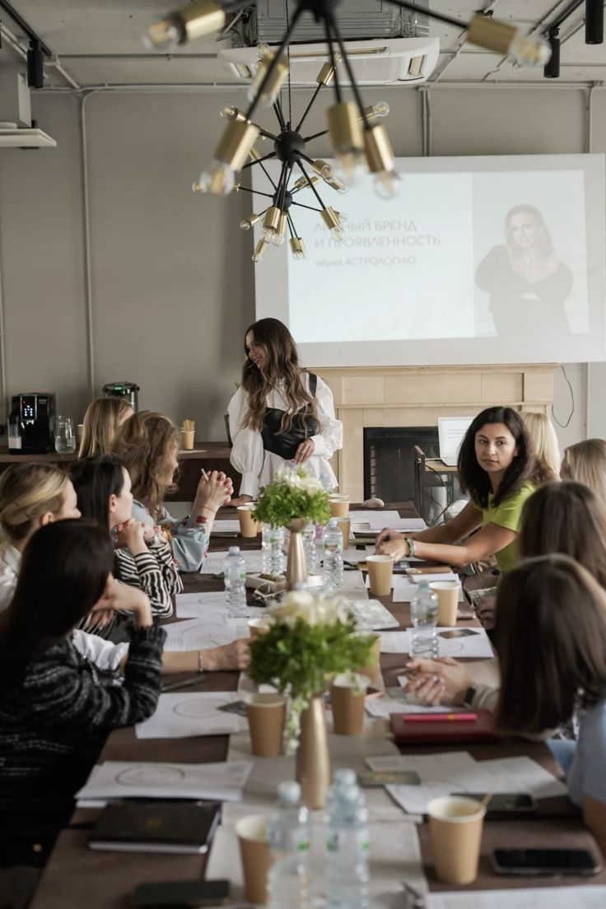
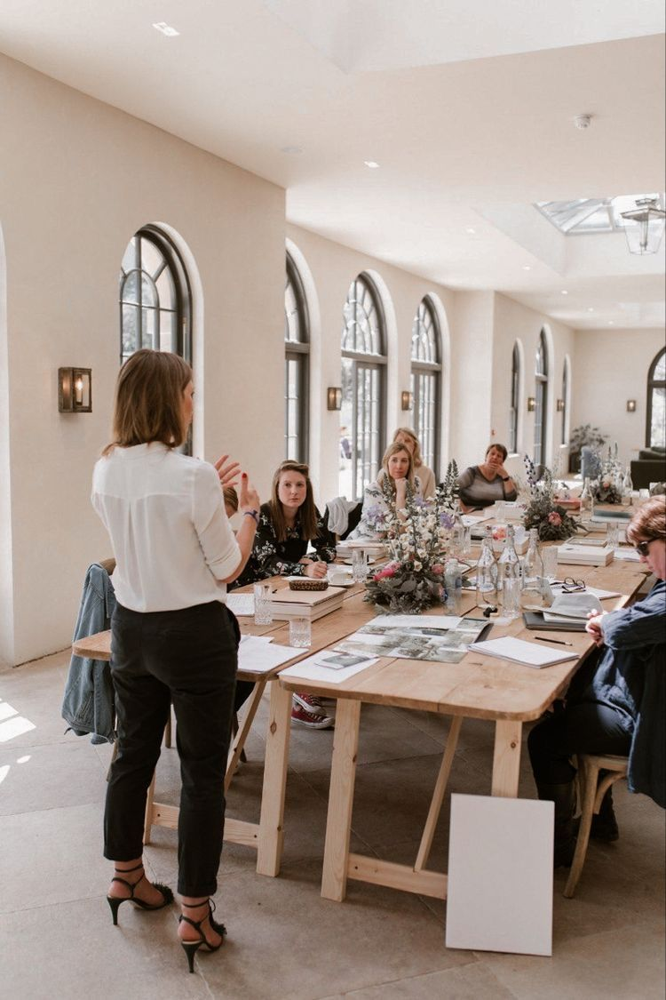

About Us
Planificamos con el corazón y trabajamos con precisión.
Nuestra visión
Soñamos con crear bodas que no solo sean hermosas, sino también profundamente significativas. Nuestra visión es ser reconocidas por transformar momentos en recuerdos inolvidables, acompañando a cada pareja con sensibilidad, creatividad y compromiso en cada paso del camino. Queremos que cada boda que organicemos hable de quienes son, y de lo que sienten.
Testimonios breves
- "Gracias a Emi, nuestra boda fue más de lo que imaginábamos. Estuvo en cada detalle, resolvió todo antes de que lo notáramos. Pudimos disfrutar sin estrés." — Sofía & Mauro
- "Nos entendió desde el primer encuentro. Supo respetar nuestros gustos y aportó ideas increíbles. Profesional, cálida y muy humana." — Valentina & Nico
- "No sabíamos por dónde empezar. Emi nos ordenó todo, nos ayudó a elegir los proveedores y se encargó de todo el día del evento. ¡Una genia!" — Flor & Guille
Formación y experiencia
Soy Emilia Rapisarda, fundadora y directora creativa de este proyecto. Me formé en organización de eventos, diseño floral, y asesoría de imagen, con una visión integral para acompañar a las parejas en todo el proceso de su boda. A lo largo de los años, complementé mi formación con cursos en logística, tendencias nupciales y gestión emocional en eventos, porque sé que este camino no es solo planificación… también es acompañamiento. Trabajo junto a un grupo de profesionales comprometidas con la excelencia: diseñadoras, decoradoras, asistentes de coordinación y especialistas en montaje. Cada integrante del equipo aporta su talento y experiencia para que todo salga perfecto. Nos une el mismo objetivo: que las parejas disfruten su día sin preocupaciones, sabiendo que todo está cuidado.
Nuestro Equipo
 Nos encontramos en Corrientes Capital, pero organizamos bodas en toda la región y también realizamos bodas destino. Si estás en otra ciudad o país, no te preocupes: ¡también trabajamos de forma virtual para acompañarte estés donde estés!